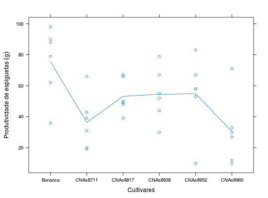

Ensaio 2 de um experimento em delineamento quadrado latino, que avaliou a resistência a insetos em seis cultivares de arroz, sendo uma delas comum ao ensaio 1. Os dados são de produtividade de espiguetas, em gramas.
Um data.frame com 36 observações e 4 variáveis
ZIMMERMANN (2004), Tabela 12.27, pág.262.
library(lattice) library(reshape) data(ZimmermannTb12.27)#> Warning: data set ‘ZimmermannTb12.27’ not foundstr(ZimmermannTb12.27)#> 'data.frame': 36 obs. of 4 variables: #> $ linha : Factor w/ 6 levels "1","2","3","4",..: 1 2 3 4 5 6 1 2 3 4 ... #> $ coluna: Factor w/ 6 levels "1","2","3","4",..: 1 1 1 1 1 1 2 2 2 2 ... #> $ cult : Factor w/ 6 levels "Bonanca","CNAs8711",..: 1 5 6 4 2 3 4 6 1 2 ... #> $ prod : num 79 53 27 30 31 39 44 71 88 66 ...cast(ZimmermannTb12.27, linha ~ coluna, value = "cult")#> linha 1 2 3 4 5 6 #> 1 1 Bonanca CNAs8938 CNAs8817 CNAs8711 CNAs8952 CNAs8960 #> 2 2 CNAs8952 CNAs8960 CNAs8938 Bonanca CNAs8711 CNAs8817 #> 3 3 CNAs8960 Bonanca CNAs8711 CNAs8938 CNAs8817 CNAs8952 #> 4 4 CNAs8938 CNAs8711 CNAs8952 CNAs8817 CNAs8960 Bonanca #> 5 5 CNAs8711 CNAs8817 CNAs8960 CNAs8952 Bonanca CNAs8938 #> 6 6 CNAs8817 CNAs8952 Bonanca CNAs8960 CNAs8938 CNAs8711cast(ZimmermannTb12.27, linha ~ coluna, value = "prod")#> linha 1 2 3 4 5 6 #> 1 1 79 44 67 20 83 30 #> 2 2 53 71 67 98 19 50 #> 3 3 27 88 39 55 66 67 #> 4 4 30 66 58 49 12 36 #> 5 5 31 48 10 10 62 52 #> 6 6 39 58 90 33 79 43levelplot(prod ~ linha + coluna, data = ZimmermannTb12.27, aspect = "iso", panel = function(x, y, z, subscripts, ...) { panel.levelplot(x, y, z, subscripts = subscripts, ...) panel.text(x, y, ZimmermannTb12.27$cult[subscripts], cex = 0.8) panel.text(x, y, z, pos = 1) })xyplot(prod ~ cult, data = ZimmermannTb12.27, type = c("p", "a"), xlab = "Cultivares", ylab = expression("Produtividade de espiguetas"~(g)))